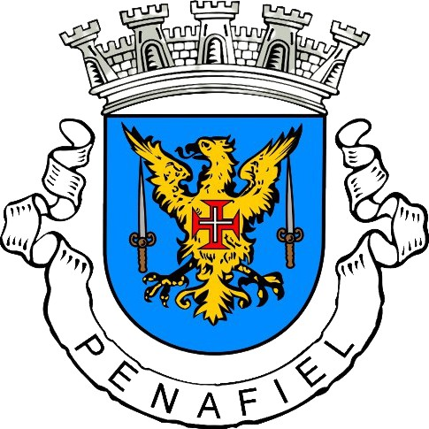
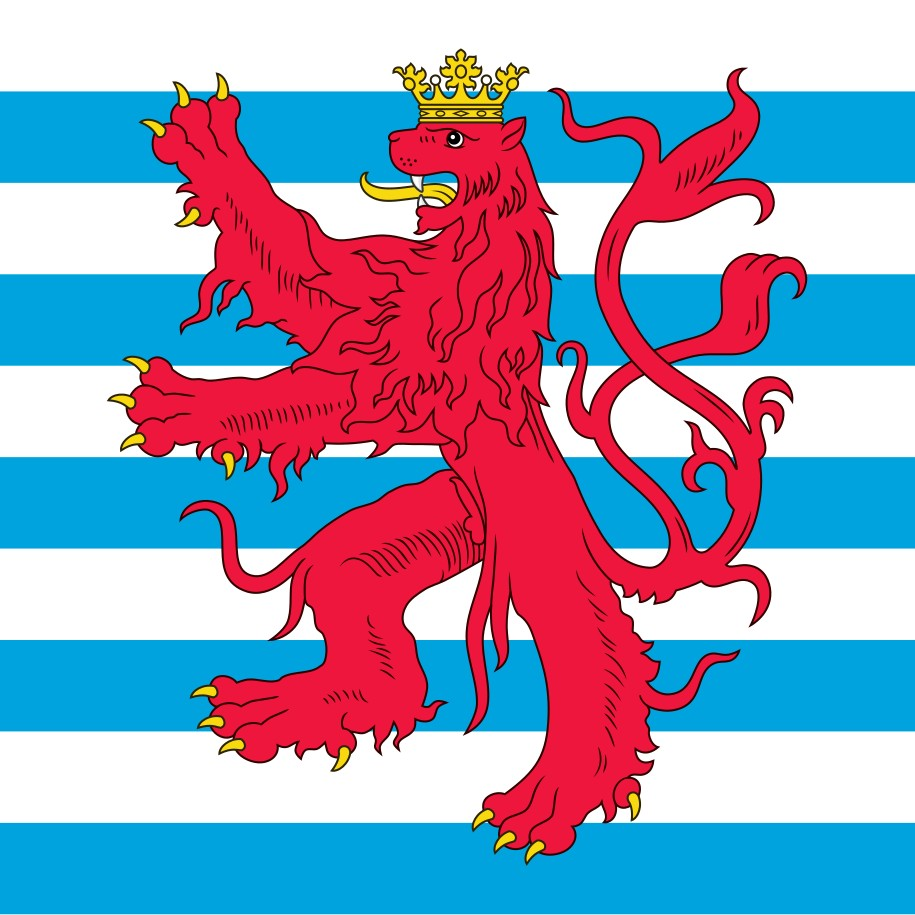
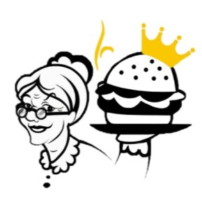
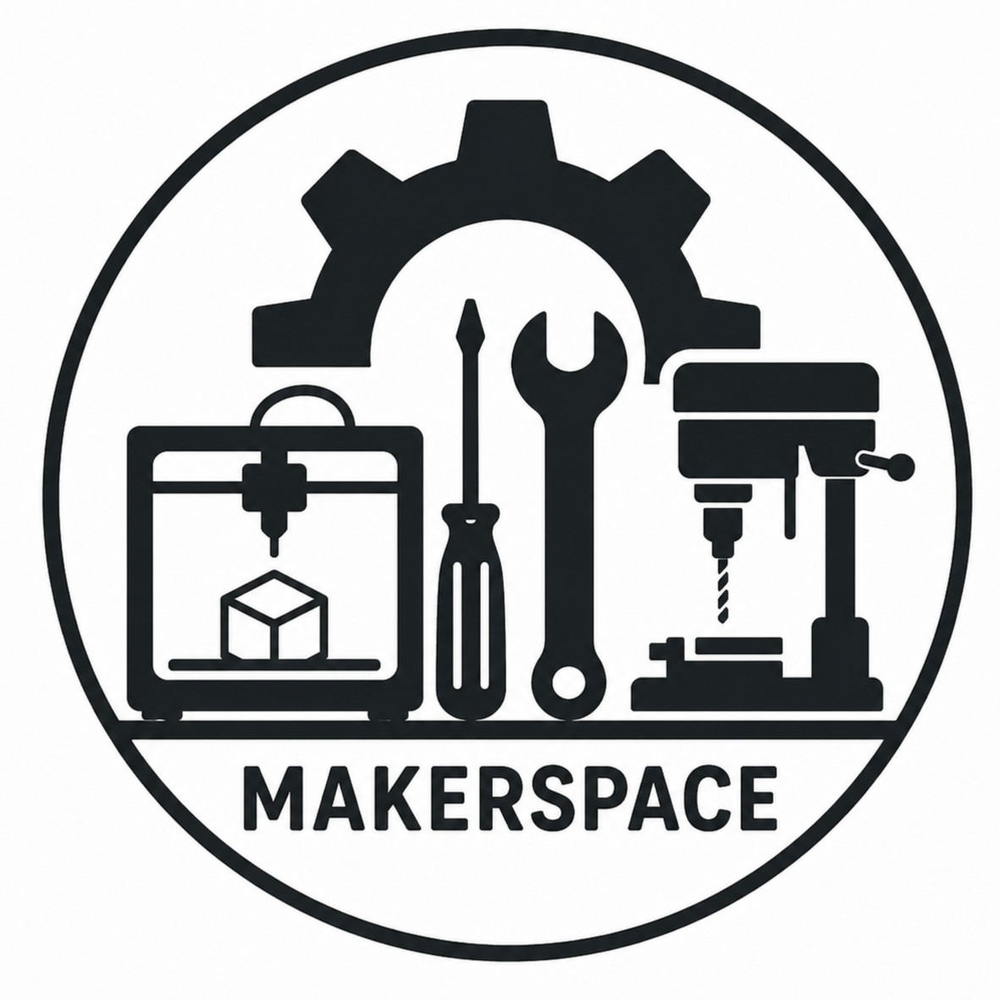
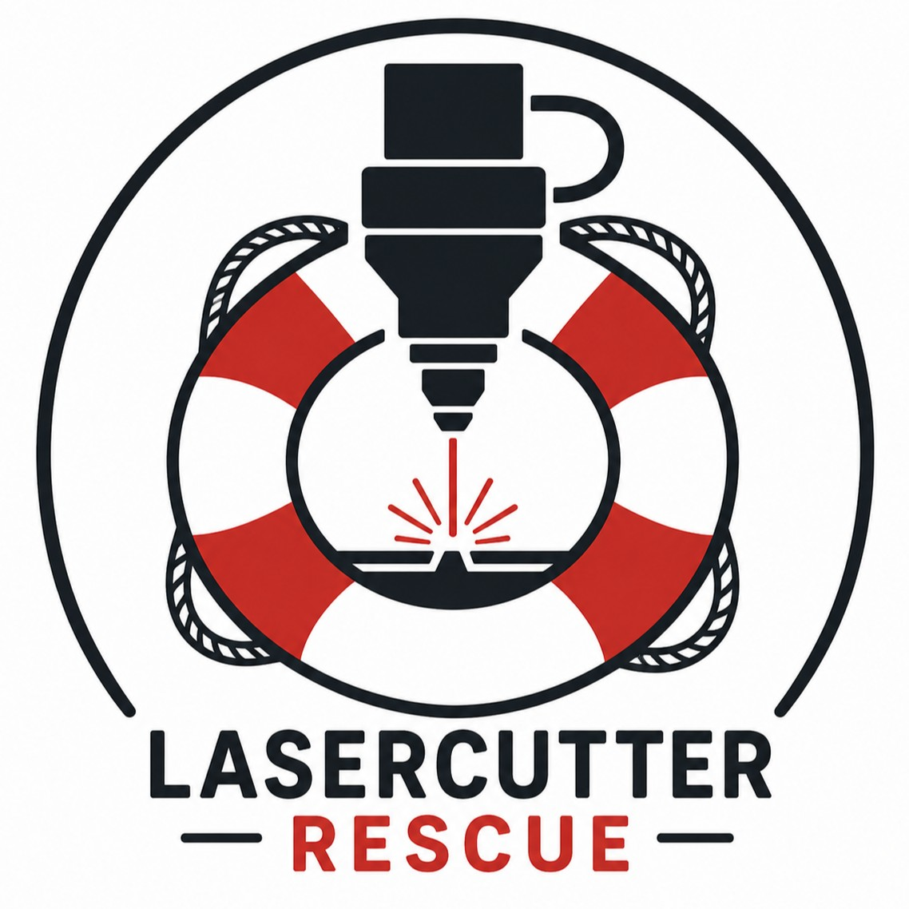
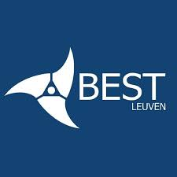
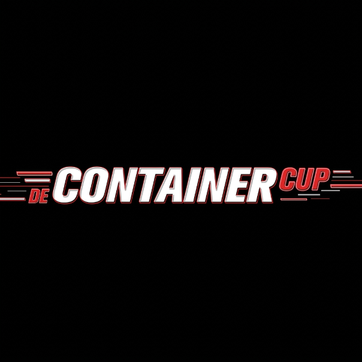

Hey, I'm Pedro. I'm a mechatronics engineer in the making, currently finishing my Master's at KU Leuven Group T, with a focus on advanced robotics. I grew up between Portugal and Luxembourg, which is probably why I can't sit still with just one thing: I've designed robotic arms, built PLC-controlled tilt compensation systems, and I'm currently building a machine learning pipeline to catch anomalies from sensor data while a robot unscrews hard drives, for my thesis. When I'm not in a lab or a workshop, I'm either at the gym training for Hyrox or checking on plants I've convinced myself I have room for.
My journey
Born in Penafiel, Portugal
The start of it all.


Moved to Luxembourg
Didn't speak a word of the language, so I repeated 4th grade to catch up.
Boom Burgers & co.
Co-founded a burger stand with three friends for a school entrepreneurship program. We won 1st place.
See the full story →
Makerspace elective
My first real taste of engineering: CAD, laser cutting, and 3D printing.

Chess elective
Learned to play properly and competed in tournaments, once placing top 3 among non licensed players.
The laser cutter rescue
Summer floods damaged the school's laser cutter. A friend and I tried to fix it during the academic year, but didn't manage in time.

Lux'OR
Co-founded a peach-flavored liqueur with two friends, produced with a local Luxembourg distillery.
See the full story →
Started at KU Leuven
Began my Bachelor's in Electromechanical Engineering at KU Leuven Group T.
Ferrero Responsible Marketing Challenge
Won the challenge, while already at uni.



Graduating & starting my Master's
Finishing my Bachelor's and moving into a Master's in mechatronics and advanced robotics.